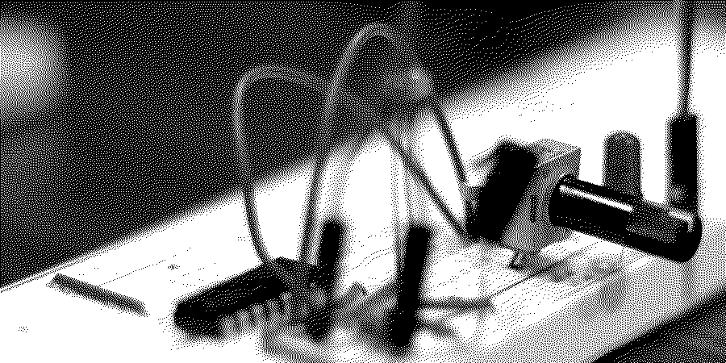

Belfast · a noise-positive organisation
Instruments you can open, fix and change.
We're a Belfast collective that builds electronic instruments you can open, repair and make your own. If you're a disabled musician, we'll design one with you for free. Our workshops are open to everyone, and their fees cover the cost.
why this matters
Instruments sold as accessible are often expensive, designed without disabled musicians in the room, and hard to repair. When one breaks, or stops fitting the way you play, it ends up in a cupboard.
So we design instruments with disabled musicians, from cheap, standard parts. You decide how yours works, and you learn to fix and change it yourself. An instrument you can maintain keeps getting played.
what we do
instruments
If you're a disabled musician, we'll design an instrument with you, free.
workshops
Build your own instrument and learn how it works. Open to everyone.
working with organisations
Co-design with music therapists, SEND schools and community groups.
book & build
A free reading group where we read about circuits, then build them.
how it fits together
workshops
Open to everyone, disabled or not. You build an instrument and learn how it works.
Each fee covers the kit and the room. The rest pays for instruments.
instruments
If you're a disabled musician, we can design an instrument with you, around how you play. It's free.
It's built on the same open parts, so you, and everyone from the workshops, can fix and change it.
critical making
We learn about technology by building it, and ask questions as we go. Where did this chip come from? Who was it designed for? Who gets left out?
Between us we've designed commercial synths, turned drums into controllers and wired up installations, but we still start with naive questions. Anyone can ask them, and they get sharper as you build.
talks and papers
- Who makes music software accessible? ASSETS '26 talk, slides and script.
- The Qualities of Convivial Tools and Their Relevance to Music Software Accessibility. ACM TACCESS, 2025. Open access.
- Inclusive musicking ecosystems. Alex Lucas's PhD portfolio, Queen's University Belfast, 2021.